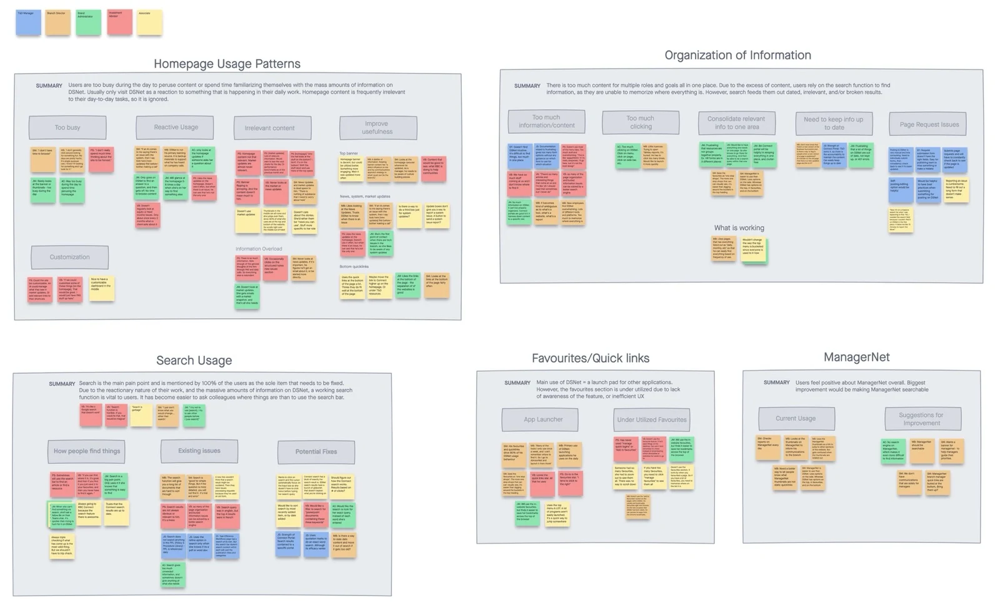
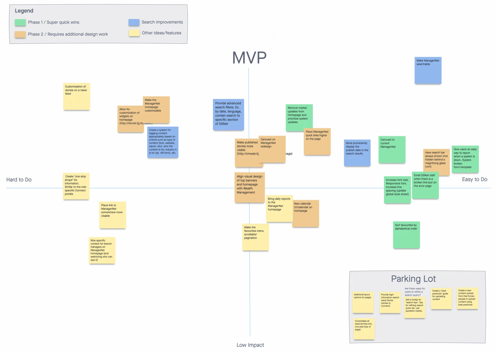
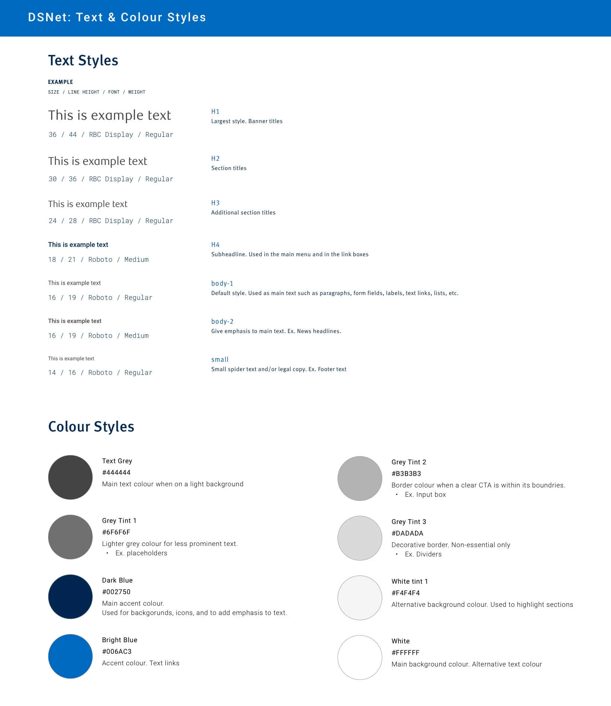
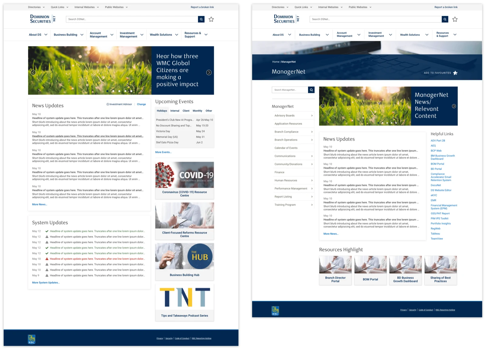

User goal
Find documents and information needed to do their work efficiently and accurately, and stay updated on deadlines and system updates or outages.
A user’s daily struggle to find content: Users visit the website daily and they struggle to find the information they need due to the sheer volume of poorly organized content. This is a constant source of frustration and disruption of their workflow.
“When I can’t find something using [the search bar], I’ll ask another BA [bank administrator] instead. If they don’t know, they’ll ask someone else. It can become a chain of asking people across different [bank] branches. It’s quicker than trying to hunt for it on DSNet.”
This struggle to find content was due to a two-fold problem:
Content is created by multiple groups, and there is no central guideline on how to label, tag, or structure content. This results in a jumble of content with no consistent way to search for it.
The content consisted of important company announcements, system updates, company culture building, and more. Much of the content on the website wasn’t being read by the employees, thus leading to them missing important announcements and information.
Find documents and information needed to do their work efficiently and accurately, and stay updated on deadlines and system updates or outages.
Drive more views to the content they push out, and help users form the habit of checking the website for company announcements and updates, instead of relying on weekly email newsletters to stay informed.
I conducted five 30-minute user interviews with each user group, and then synthesized the data into affinity maps.

Through the mapping exercise, I discovered a few key insights:
The website’s search feature was the most used feature, and the primary issue of concern among users. Users relied heavily on the website’s search bar to find the information they needed, however, the search results would be irrelevant, out of date, or lead to broken links. This was the biggest blocker to the users’ productivity.
The content on the website’s homepage is largely ignored because it is usually irrelevant to the user’s day-to-day tasks. Users rarely have time to peruse culture building articles, and mainly look at system update announcements.
There are many different types of users who all find different types of content useful, so only a portion of content is relevant to each group.
Based on the research insights, I came up with a number of opportunities for an improved user experience.
The search bar is currently hidden behind two mouse clicks. Make it more accessible by having it always shown at the top of the screen, and only one click away. Also, improve the search results by adding advanced search filters (e.g. sort by date, relevance, document type, etc.), and adding publish dates and high-information text previews.
Remove minimally used content from the homepage and allocate more space to the system and news updates.
Allow for the customization of content on the homepage.
Taking all of the opportunities that I saw, I facilitated an MVP Matrix Workshop with the business and development teams. I led the teams to chart each idea on an impact vs. effort matrix, and then through creating a structured roadmap on how we wanted to approach the website redesign. The plan included:
Ideas that were easy to implement, yet still had a decent impact toward the overall user experience. This phase 1 was created because the business was extremely keen on getting changes out the door ASAP.
A full redesign of the website homepage, as well as changes to the search function.
Structural changes to the way website content is created and organized.

With our redesign roadmap laid out, I worked on consolidating the disparate styles throughout the website, and creating designs of the phase 1 ideas for the website, basing my designs off of their existing design styles and components.

